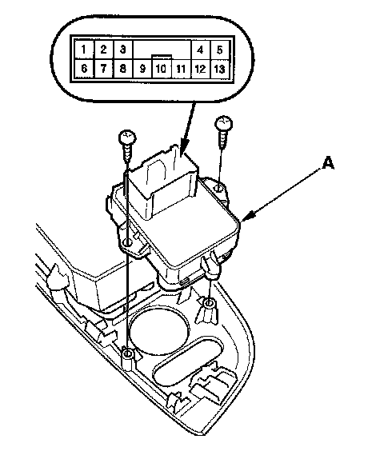
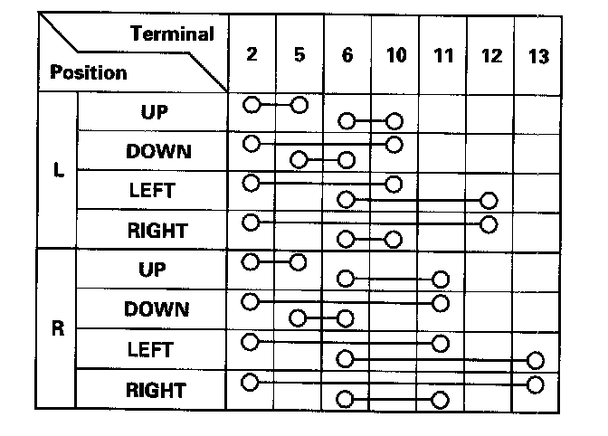

4-Door
Power Mirror Switch Test/Replacement4-door
1. Remove the driver's door power switch panel.

2. Disconnect the 13P connector from the power mirror switch (A).

3. Check for continuity between the terminals in each switch position according to the table.
4. If the continuity is not as specified, remove the screws and replace the switch.